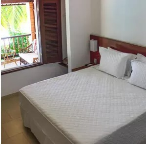

Tatajuba

Funcionando desde 2015, a Tatajuba está instalada num amplo terreno pertinho da Broadway e com vista para o mar. Sua piscina é a maior da vizinhança. Os quartos são bem mantidos. Há um estacionamento no próprio hotel (com lugares limitados, reserve antes).
Vila Canoa
A Vila Canoa é a única pousada pé na areia de Canoa Quebrada — com direito à sua própria barraca/restaurante de praia. Seus quartos acomodam de 2 a 5 pessoas e têm decoração charmosa.
Ravanela
Aberto em 2016, o Ravenala Boutique Hotel tem arquitetura moderna e elegante, construída em módulos de dois andares. Os apartamentos da categoria ‘deluxe’ têm 70 m², cozinha equipada e acesso direto à piscina, pois estão no térreo. A categoria ‘king suite’ tem 40 m² de área, e os da categoria ‘superior’, 29 m². A decoração é ‘clean’.